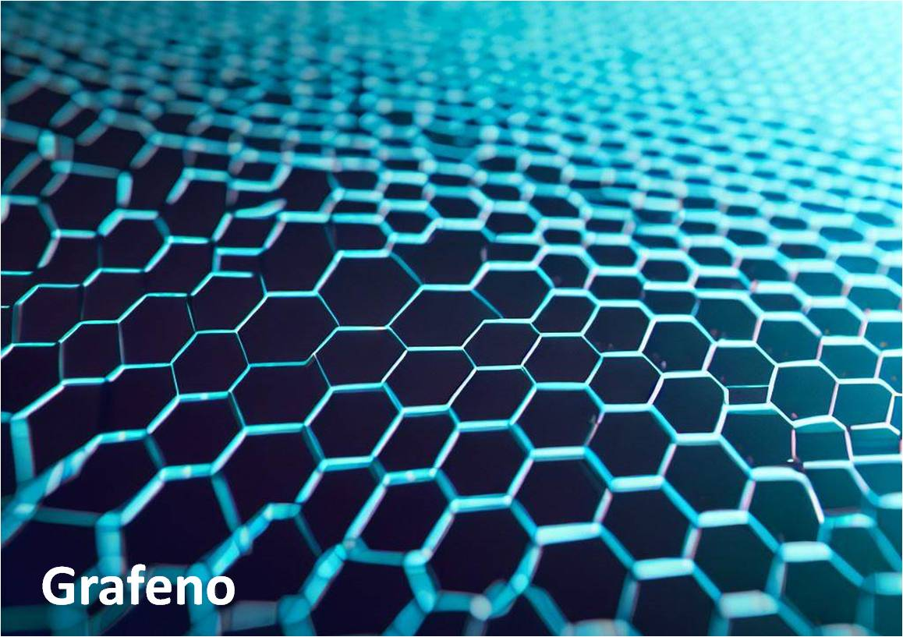
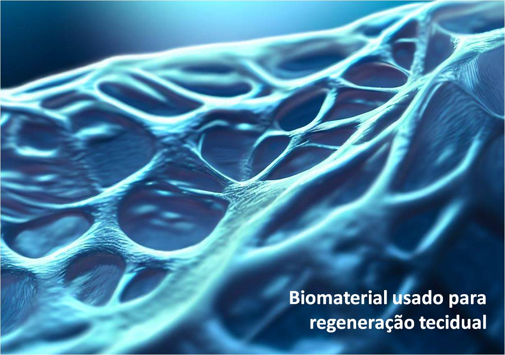

Um orgulho da Ciência brasileira: Nádia Ayad
Quem é Nádia Ayad
Nadia Mohammed Elmassalami Ayad nasceu na cidade de Rio de Janeiro em 1994, e já teve desde o berço a influência de ser cientista tendo os pais como pesquisadores, e depois do seu irmão que também começou a trilhar o caminho da pesquisa e ensino.
Ingressou em 2011 no curso de Engenharia de Materiais no renomado Instituto Militar de Engenharia (IME, RJ). Durante sua graduação, Nádia fez vários trabalhos voluntários, estágios de pesquisa e iniciações científicas, tanto no Brasil como no exterior. Ficou um ano na Universidade de Manchester onde o grafeno foi criado, e estagiou na Imperial College London.
Nádia representa a estatística de apenas 5,5% de mulheres negras são bolsistas do CNPq, órgão ligado ao Ministério da Ciência, Tecnologia e Inovação que tem por objetivo incentivar a pesquisa no Brasil.
Destaque científico
Em 2016 Nádia Ayad tinha 23 anos, era uma engenheira recém-formada pelo IME, e sagrou-se a vencedora de uma competição internacional promovida pela empresa sueca Sandvik que havia proposto o Global Graphene Challenge Competition, uma iniciativa na busca de soluções inovadoras e sustentáveis sobre o uso desse material.
Competindo com pesquisadores do mundo, Nádia elevou a Ciência brasileira no patamar de grandes cientistas.
Utilizando o grafeno, um derivado de carbono considerado um material mais forte, mais leve e mais fino conhecido na atualidade e com uma variedade de aplicações, Nadia Ayad criou um sistema de dessalinização e filtragem de água que pode possibilitar o acesso à água potável a milhões de pessoas, além de reduzir custos com energia e pressões sobre as fontes hídricas.
Inspirações futuras
Atualmente, Nádia Ayad está fazendo Doutorado em Bioengenharia e Regeneração de Tecidos na Universidade de Califórnia, EUA, desenvolvendo estudos com biomateriais e investigando os efeitos nas células-tronco durante o desenvolvimento embrionário.
“Eu quero poder aplicar a engenharia na criação de produtos que realmente farão a diferença e ajudarão as pessoas a superar doenças que são muito difíceis de tratar atualmente.” ~Nádia Ayad~
“O Brasil é um país cheio de mentes brilhantes, porém o que falta são oportunidades – tanto para que essas mentes descubram que podem ser cientistas quanto oportunidades para atingir esse sonho.” ~Nádia Ayad~